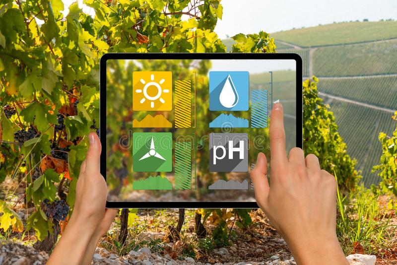
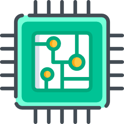

<!--<ion-header>


    <ion-toolbar>
        <ion-menu-button (click)="popclick($event)" slot="end">
        </ion-menu-button>
        <ion-title>
            Administrator
        </ion-title>
    </ion-toolbar>
</ion-header>
-->
<ion-toolbar>
       
        
    </ion-toolbar>
<ion-content fullscreen="true">
    <ion-grid>
        <ion-row justify-content-centre>
            <ion-col align-self-center>
                <ion-card class="top">
                    <ion-menu-button (click)="popclick($event)">
                        <!-- <ion-icon src="/assets/forward.svg" alt="ion"></ion-icon> -->
                        <!--<ion-icon name="menu-sharp" slot="icon-only"></ion-icon>-->
                        <!--<ion-icon name="filter-outline" (click)="popclick($event)"></ion-icon>-->
                        <ion-buttons slot="end">
                            <ion-menu-button autoHide="true"></ion-menu-button>
                        </ion-buttons>

                    </ion-menu-button>
                    
                </ion-card>
            </ion-col>
        </ion-row>
        <ion-row justify-content-centre>
            <ion-col align-self-center>
                <div class="cards">
                    <ion-card class="user" routerLink="/view-farmers">
                        
                    </ion-card>
                </div>
                <ion-label class="lbl-user">Farmers</ion-label>
            </ion-col>

            <ion-col align-self-center>
                <ion-card class="device" routerLink="/view-smartdevices">
                    

                </ion-card>


                <!-- <ion-label class="lbl-user">Farmers</ion-label> -->
                <ion-label class="lbl-smartdevice">Smart Devices</ion-label>
            </ion-col>
            <ion-col>

                <ion-card class="logout" (click)="logout()">
                    

                </ion-card>


                <ion-label class="lbl-history">Logout</ion-label>
            </ion-col>
        </ion-row>
    </ion-grid>

</ion-content>